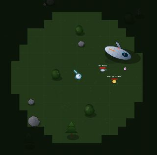
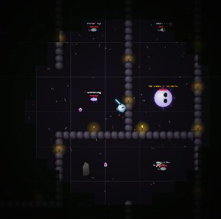
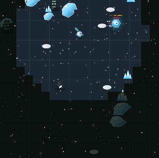
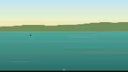
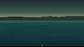
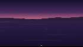

SIGNAL LOST
Crash-landed on a hostile world with a synthesized psychedelic-western score, you'll fight across an open frontier, a labyrinthine cave, and a mountain trail to recover your ship's parts and beat the game — or just chase the high score. Permadeath, one run at a time.
PLAY NOW


SKIP ROCKS
A quiet one. Drag to flick stones across the water from the shoreline and see how many skips you can string together, while the scenery drifts between misty lakes, golden ponds, and dusk coves to a soft ambient score. No score to lose, just your best streak this session.
PLAY NOW